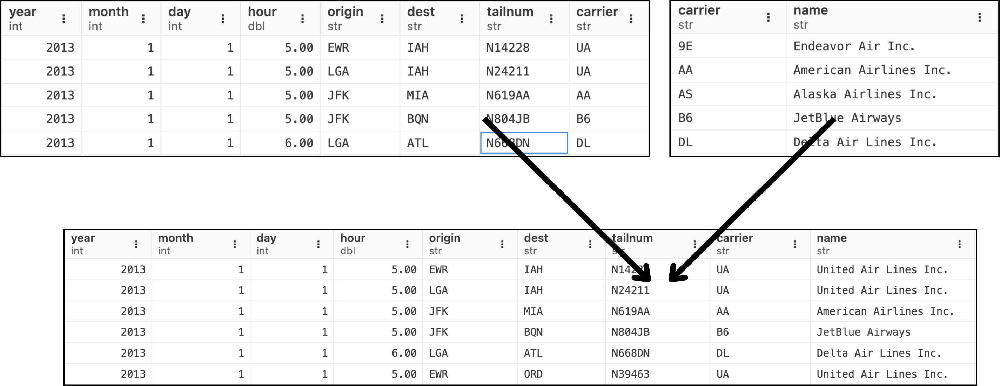
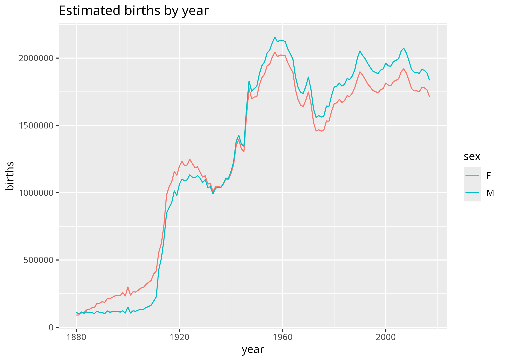

IJC437 Introduction to Data Science – Week 04 (Lab Session)
Data Cleaning and Processing
Erika Siregar
University of Sheffield
22 October 2025
Scan to Access The Slide
What We’ll Do Today
Looking back: so far, we’ve learned several things …
Now, let’s move on to learn:
- data manipulation \(\rightarrow\) using tidyverse’s dplyr. Meet the 5 famous functions (verbs):
filter(),arrange(),select(),mutate(),summarise(). - tables/datasets join \(\rightarrow\) basic SQL knowledge will be helpful.
- spot issues when working with real datasets (e.g. outliers and missing values)
Part I: Data manipulation/transformation with dplyr
dplyr gives concise verbs for common tasks:
filter()— pick rowsarrange()— reorder rowsselect()— pick columnsmutate()— create/transform columnssummarise()— collapse to summaries \(\rightarrow\) often must be preceded bygroup_by()
Inspect mpg
We’ll use the built-in mpg dataset for examples.
Make sure you know some of useful data inspection functions.
Read more about mpg dataset here.
filter() - Select Observations/Rows
Select certain manufacturer, displ, and year?
arrange() — Reorder/Sort Rows
What is the base R counterpart for arrange()?
select() — Selecting Columns
mutate() — Create New Variables
Note
The mutate function doesn’t change the original data, meaning the new column is only available to functions that are piped after the mutate.
summarise() - Create Summary
Part II: Combining datasets
Basic Idea
Recommended reading material: http://r4ds.had.co.nz/relational-data.html


An Illustration
We have flights2 and airlines table.
We want to have the full name of the airline in the flights2 table rather than the carrier abbreviation.
How to achieve this?

Part III: Spot Issues in Real Datasets
Working with real data — Free School Meals (FSM)
FSM - Filter out 9999 and handle NA
Or keep NA and exclude 9999:
Missing values — simple imputation example.
Further resources
- Check the list of resources on the last page of the worksheet (pdf)
- Erika’s pick: Posit Cheatsheet
Bonus Challenge (For Anyone Who Dare to Try)
Combining dplyr and ggplot
babynames dataset:
The output that we want:

Go to next slide to try out.
Combining dplyr and ggplot
That’s a wrap!
Now it’s your turn to dive into the worksheet